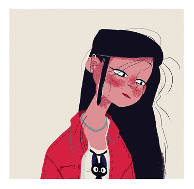
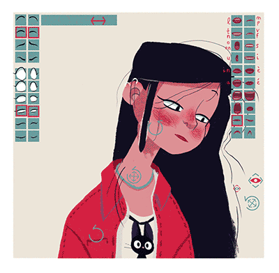

Connector
Connector

Design by Justine Cunha, animated by Duduf
The Connector is a way to control almost any property in After Effects with any other property, a bit like parenting between layers, but with properties.
With the connector, a “master property” will drive one or several “slave properties” and automate their animation depending on the master property value.
It is very useful in three cases:
- Every time you need a causal link between a property and some other properties. For example “when the arm bends, the cloth has to adapt”: this means you can use the connector to drive the shape of the cloth with the rotation of the forearm.
- It is very powerful to quickly connect sliders and other controllers to any properties, and for example control a head turn from a single value like the X position of a controller or a slider.
- You can use it to control opacities of layers with a single property, for example to control phonemes with the position of a controller.
The slave property has to be prepared with keyframes, and the master property will drive this animation a bit like if you were using time remapping on the slave property, in a similar way to the “set driven keys” in Autodesk Maya. When the master property value is at the predefined minimum, the child property value is the one at the start of its animation, and when the master property value is at the predefined maximum, the child property value is at the end of its animation.

Property types handled by the connector
As the Connector uses the same principle as time remapping, it is able to connect almost any type of property to any other type of property, which makes it a very powerful tool, even on older versions of After Effects.
Slave (controlled) property
The slave property can be of any type which can be animated with keyframes and have an expression (numerical and spatial values, shapes, texts…)
Master (controller) property
The master property can be of any numerical type (but can be multi-dimentionnal):
- Slider
- Angle
- Position
- Scale
- Opacity
- Color
- etc.
That said, Duik provides several pre-rigged and very useful controllers which are meant to be used with the connector.
Slider, 2D Slider, Angle
These are layers which provide a nice UI in the composition panel to control your animation. They’re especially used for facial rigging, but can be nice for a lot of different things.
Spatial Effector and Effector Map
The Effector is a intuitive way to spatially control the slave properties, as the Effector Map does the same but using the color or alpha channel from a texture layer.
Expose Transform
The Expose Transform tool is an object (a controller) which will measure and expose angles, orientations, coordinates and distances between two layers.
Hint
The IK effect on controllers exposes the distance between the end and the root of the limb, which may be very useful with the connector, to connect anything to the bending of the limb.
IK
If you pick a controller with an IK effect, the connector is able to connect either the IK Length, the stretch of the upper part of the limb or the stretch of the lower part of the limb.
How to set the connector up
Quick setup
To set the Connector up quickly, you can do it the quick way:
- It is advised to first add the needed keyframes on the slave properties, though this can be done or modified afterwards. Just animate the slave property as you need it to change when the master (controller) property goes from its minimum to its maximum.
- Select the slave properties in the composition
- Click the Connector button
Duik will create or use any preexisting Connector controller, and add a slider in the effects of this layer. This slider is a simple percent ranging from 0 to 100 which will control the selected properties.
This is the simplest and quickiest way to use the connector.
If you need to have the controller in another composition, you can either use the Extract controllers tool from the parent composition, or just copy and paste the controller to the new composition, and link the percentage with an expression, simply using the pickwhip.
Read further to learn how to do more advanced stuff with the connector, in the additionnal panel.
Standard setup

Using the standard setup, you can do more things than the quick setup, like connecting from a composition to another, and be able to choose almost any property as a controller (see the section above, Property types handled by the connector).
- It is advised to add the needed keyframes on the slave property first, though this can be done or modified afterwards. Just animate the slave property as you need it to change when the master property goes from its minimum to its maximum.
- a. Select the master property in the timeline, and click on Pick Master Property. The name of the master property will be shown on the button.
b. You can also use one of the 4 controllers of Duik especially made to be used by the connector (the slider, the 2D slider, the angle and the spatial effector) - Depending on the type of the master property, you can select the axis (or the channel if it’s a color) to be used to control the slave properties.
- Choose between the value or the velocity of the master property to control the slave properties. Using the velocity can be very useful for example to control how the antenna of a car rotates depending on the speed of its X position.
- Set the minimum and maximum value of the master property.
- Click either on Connect to selected properties or Connect to selected layers opacities. The latter can be used to control the display of a bunch of layers with a slider: it’s a good way to switch predefined phonemes for a mouth with a controller for example. It is exactly like using time remapping on a composition containing a layer sequence, but without all the issues caused by using actual time remapping.
After these few steps, everything is ready: as soon as the master property changes, the slave properties will be driven. You can change all the settings afterwards in the effects of the master layer.
If you need to adjust the keyframes on the slave properties, you can temporarily deactivate the connector by disabling the corresponding connector effect on the master layer.
Multiple connections
You often have to connect the same slave property to multiple master properties. For example, this happens when rigging a head turn to control the left-right turn with the X position of a controller and the up-down turn with its Y position. In this case, you have a different connection for each axis, on the same properties.
There are different ways of achieving this, depending on the type of the slave property.
- For transformation properties (i.e. position, rotation and scale), the quickiest and easiest way is to use parents: for each new connection, add a null layer, and parent the already connected layer to this null. You can then connect the transformation of the null object, and you can repeat this process for each new connection you want to make.
- For other numerical properties (including transformations too) you can use the list tool of Duik, which is available in the link & constraints panel (in standard and expert mode only, it is hidden in rookie mode). Just select the property, and click the list button. Duik will add an effect with 5 new properties to control the original property, allowing up to five connections (or even more if you add a list to the list…). With the list, you won’t connect the original property, but one of the new properties in the list effect.
- And there are non-numerical properties, like Bezier paths…
- If you’re using an version of After EFfects older than CC2018, it can be a bit tricky: with older versions, there is no way to efficiently work with shapes in expressions, so you can not do more than one single connection to the shapes (to your X or Y slider, but not both). The only way to achieve this is by duplicating the bezier path and try to make it work, combining the two of them, but it can be very difficult. Using masks can help: instead of connecting the original shape itself, you can connect masks which “cut” it, or with shape layers try using multiple shapes and the merge path option (which works like the pathfinder of Adobe Illustrator).
- If your using CC2018 or any more recent version, you can add bones to the Bézier path (select the path property, or any vertex of the path, and click on the Add bones button in the links & constraints panel of Duik). This way you’ll have one layer for each vertex (and tangent) of the path, and you can then connect the position properties of these bones, and get back to the first and second method (connecting transformations or numerical properties).
Examples
Automating the cloth when the arm bends
With an arm already rigged, made of shapes (either shape layers or masks on solids):
- Animate the rig so the arm is straight at the beginning of the comp, and bent at its maximum a couple seconds later. If it’s possible, animate only the FK of the forearm so the animation is simple (or just temporarily disable the expression in the Structure to animate its rotation), and so you can see only the effect of the forearm on the cloth.
- Animate the shape(s) of the arm and forearm so the cloth looks nice during the whole animation. Feel free to add as many keyframes as needed and use eases!
- Select the rotation property of the structure of the forearm. This is the property which exposes how the arm is bent, no matter what, in FK as in IK.
- Click on the Pick master property button of the panel of the connector.
- a. Set the minimum to the rotation value of the structure of the forearm at the beginning of the composition, when the arm is straight.
b. Set the maximum value to the rotation value of the structure of the forearm at the end of the animation, when the arm is completely bent.
c. Note that Duik will try to automatically set these values, reading the existing animation (if any) of the master property. - Select the shape(s) used to draw the cloth (and now animated).
- Click on the Connect to properties button.
- Now you can remove the animation of the arm (but NOT the animation of the shapes which is needed by the connector)
- You’re all set! Now you can animate the arm as you wish, the cloth will correctly adjust.
Controlling a head turn
With a precomposed head:
- Animate anything you need to turn the head from left to right in the precomposition of the head.
- a. To control this head turn, we will not use an existing property, but create a nice controller just for it:
b. Go to the main composition, from where you will animate the head
c. In the panel of the connector, click on the Slider button - Select ALL the animated properties of the head turn in the precomposition of the head (you don’t need to select all the keyframes as long as the properties themselves are selected).
- Click on the Connect to properties button.
- That’s it! Now when you move the slider from left to right, the head turns!
Controlling phonemes for a mouth

Design by Justine Cunha, animated by Duduf
You can connect the position of a controller to phonemes. You must have one layer for each phoneme:
- Select the controller’s position
- Click on the Pick master property button of the panel of the connector.
- Set the minimum value corresponding to the position of the controller where the first mouth must be displayed.
- Set the maximum value corresponding to the position of the controller where the last mouth must be displayed.
- Select the mouth/phonemes layers.
- Click on the Connect to opacities button of the connector.
- Et voilà! Move the controller to change which phoneme is displayed.
Tip
You can add a background behind the controller showing all the phonemes to know what you are selecting.
Note
The order of the phonemes is based on their indices in the stack the moment you create the connector.